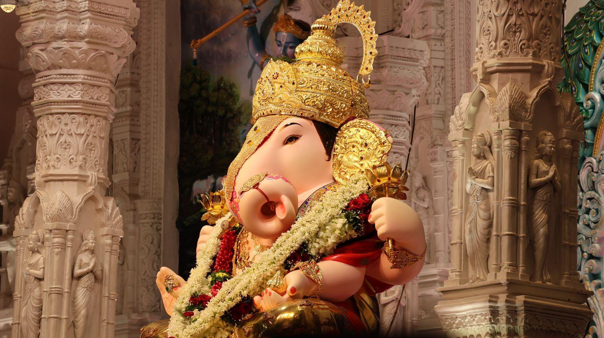
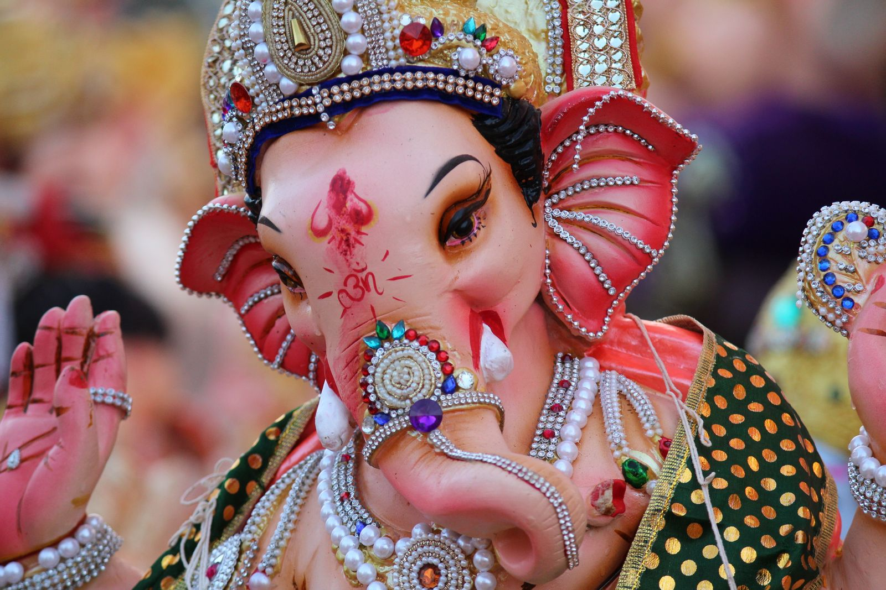

Ten Days of Bappa
Home Ganpati · Erandwane, Pune · Ganesh Chaturthi 2025
The ask. The Ogale family has brought Ganpati home for 41 years. The grandfather, now 88, could no longer sit through the full ten days, and the family wanted one film the whole household — including two sons abroad — could keep.
The shoot. Five days across the festival: sthapana, two evening aartis, modak-making morning, visarjan. Two cameras on aarti days so the idol close-up and the family's faces exist in the same moment; a recorder on the harmonium, never a song laid over afterwards.
- Delivered
- 20-minute chaptered film, 3 vertical reels, 150-still photo set
- Shoot
- 5 days · 2 cameras · 46 shooting hours
- Turnaround
- Film in the family's hands 12 days after visarjan
“My father watched the aarti chapter four times in one evening. Tara filmed our house the way it feels to live in it during those ten days — nothing staged, nobody performing for the camera.”
Meera Ogale, on “Ten Days of Bappa”